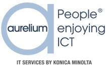

AURELIUM
In 1987 is Aurelium opgericht onder de naam FaxCom als expert in ICT-oplossingen voor KMO’s voor zo goed als elk aspect van uw ICT-infrastructuur. Ze hadden toen een zwart-wit logo, maar daar is niets meer van terug te vinden. Sinds zaterdag 3 juni 2000 zijn ze bekkend onder de naam Aurelium. Ze hadden toen een donkerblauw logo met lichte tekst.
Ondanks dat je nog steeds dit donkerblauwe logo tegenkomt op de tassen in het bedrijf, hebben ze toch al verschillende keren hun logo gewijzigd. Tot vorig jaar was het logo dat je links ziet het beeldmerk van Aurelium.
In mei vorig jaar is Aurelium overgenomen door Konica Minolta, een Japanse printbedrijf. Daarom is het logo van deze moederonderneming nu zichtbaar bij dat van haar dochteronderneming. Ook in het bedrijf kan je elementen van Konica Minolta terug vinden, zoals de lamp hieronder.

Je merkt nog wel dat Aurelium nog aan het overschakelen is naar hun nieuwe logo. Zo was voor 1 oktober dit jaar de “mail signature” van alle medewerkers van Aurelium met het oude logo ingesteld. Ook is het “icon” op hun website nog hun oude logo. In contracten met klanten herken je nog het oude logo.

Het lettertype dat wordt gebruikt in hun mails is Calibri. Calibri is het standaard lettertype en is daarom gemakkelijk omdat iedere computer dit weergeven. Vroeger had Aurelium namelijk een eigen lettertype maar dit was niet handig aangezien niet alle computers dit juist konden weergeven. De kleur die ze gebruiken in hun mails is blauw omdat dit terugkomt in hun logo.